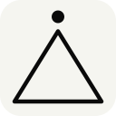
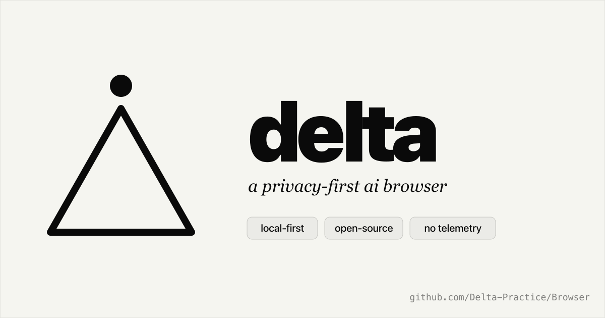
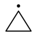

app icon
Pure line-art Δ + spark on a cream squircle. Same shape as the inline mark, just sized for dock / taskbar / favicon at any size from 16 up.
working guidelines, not finished house style. the repo is public — if you're using the mark for something we haven't anticipated, open an issue rather than guessing.
a privacy-first ai browser. local llm by default, the agent reads and acts on the active page, nothing leaves your machine.
app icon
Pure line-art Δ + spark on a cream squircle. Same shape as the inline mark, just sized for dock / taskbar / favicon at any size from 16 up.
line-art mark
The same glyph without a squircle. Single stroke-weight, currentColor. Use for headers, footers, READMEs, monogram avatars — anywhere you need the mark to inherit the surrounding text colour.
wordmark
Δ + spark glyph + "Delta" in Instrument Serif italic. Two register variants — dark (cream type on transparent) and cream (black type on cream). Use anywhere "Delta" appears next to the mark.
at least 1× the height of the Δ on every side.
In practice: leave the full vertical space of the triangle clear of other graphics on every edge. Don't crop the squircle in the app icon. Don't let interface chrome cut into the wordmark's serif tails.
black on cream, or cream on black. mint shows up inside the app as a ui accent only — never in the mark.
signal mint — dark mode
hsl(135 55% 66%)#85d693
UI accent only: AI button when active, loading bar, hover states. Not part of the mark.
signal mint — light mode
hsl(135 48% 36%)#308a4a
Same role, deeper for AA-ish contrast on cream paper.
canvas — dark
hsl(240 4% 5%)#0c0c0e
App canvas, dark variants of the icon + wordmark.
canvas — light
hsl(40 10% 90%)#e8e6e1
App canvas in light mode. Slightly warm beige, not pure white.
paper — github pages
hsl(60 19% 95%)#f5f5f0
Web register only — creamier than the app's light canvas, lifted from the unhosted reference.
text — dark on cream
hsl(0 0% 4%)#0a0a0a
Primary type colour on light surfaces.
Token names + chrome-surface variants live in apps/browser/src/renderer/src/index.css — use those tokens, never hex literals, when building UI.
Display + body sans on the GitHub Pages site. Weight 900 for mega-wordmarks, 500–600 for body, 400 for footnotes.
Default sans inside the app: tabs, buttons, body copy, settings. Same character as Inter; we keep both because the app shipped with Geist before this site existed.
The "Delta" wordmark, hero titles, editorial accents in the sidebar (e.g. quietly, delta practice). Italic only — never roman.
Numbers, hashes, status labels, the date stamp on the new tab page, code blocks. Site-side. The app uses Geist Mono internally — same role.
recolour the Δ
The mark is black on cream (or cream on black). Pink / orange / mint / etc. are not "themes" of the brand — they're a different brand.
change the stroke weight
Outlining the Δ in a heavier stroke or different weight breaks the visual family across all sizes.
typeset "Delta" in sans
"Delta" is always Instrument Serif italic. Fall back to a system serif italic when the font isn't available — never sans.

render on a coloured ground
The mark on saturated colour looks like a different brand. Keep the cream squircle that ships with the icon, or invert to a near-black squircle for dark-only contexts.
drop-shadow the wordmark
Bevels, shadows, glows — none of it. The mark is meant to read flat against its background.
write it as DELTA
In long-form copy, the product is "Delta" — capital D, lowercase rest. Δ is a logomark, not a substitute for the letter.
product
The product is Delta (capital D, no accent on the "e"). Don't write it as ∆, △, or DELTA in long-form copy. Use the Δ glyph only as a logomark, not inline in sentences.
repo
The repository is unhosted-ai/browser on github. Renaming to delta is a one-line change in repo settings whenever the maintainer wants to.
org
The github org is unhosted-ai. The HF account is sinhaankur (personal, not org). Both link back to the same project.
forks
Don't ship a fork called "Delta" with the same Δ + spark mark. Pick your own name and your own brand. The guidelines + SVGs are MIT-spirited for screenshots, talks, write-ups, and "see this thing I'm building on top of Delta" demos — they aren't a commercial license to ship a product called Delta.
macos dock
Δ + spark reads at 56pt against generic squircles. The mint accent does the lifting.
browser tab + favicon
16px favicon stays legible at the smallest size. The Δ + spark silhouette is the only cue you need.

link unfurl
The og-image card shown by X / Slack / Discord / iMessage when someone pastes the project URL. Dark canvas matches the app.

# deltaa privacy-first ai browser.
local llm by default. the agent reads and acts on the active page. nothing leaves your machine.
$ pnpm delta:dev
readme header
Line-art mark inline next to the H1. Use the dark-stroke variant on github's light theme; light-stroke when readers force dark mode.
all assets are pre-rendered in brand/exports/ — link directly or right-click → save.
{kind=link}
{kind=link}
{kind=link}
{kind=link}
{kind=link}
{kind=link}
{kind=link}
{kind=link}
{kind=link}
{kind=link}
{kind=link}
{kind=link}
{kind=link}
{kind=link}
{kind=link}
{kind=link}
{kind=link}
{kind=link}
{kind=link}
{kind=link}
{kind=link}
{kind=link}
{kind=link}
{kind=link}
{kind=link}
{kind=link}
{kind=link}
{kind=link}
{kind=link}
{kind=link}
{kind=link}
{kind=link}
{kind=link}
{kind=link}
{kind=link}
{kind=link}
{kind=link}
{kind=link}
{kind=link}
{kind=link}
{kind=link}
{kind=link}
{kind=link}
{kind=link}
{kind=link}
{kind=link}
{kind=link}
{kind=link}
{kind=link}
{kind=link}
{kind=link}
{kind=link}
{kind=link}